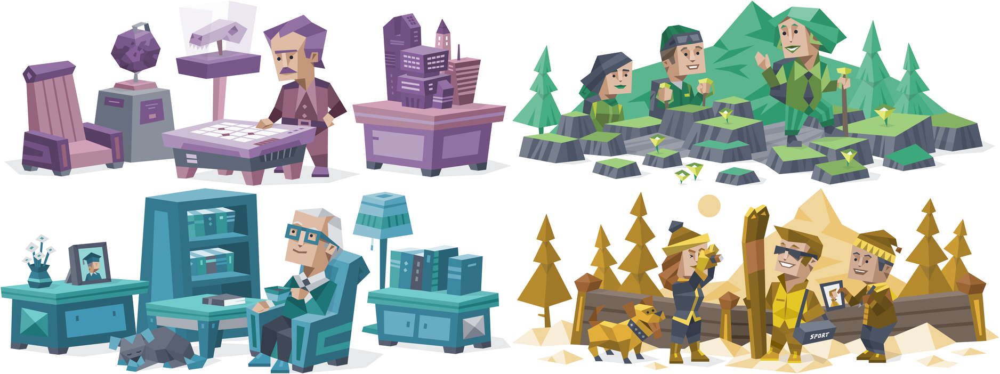
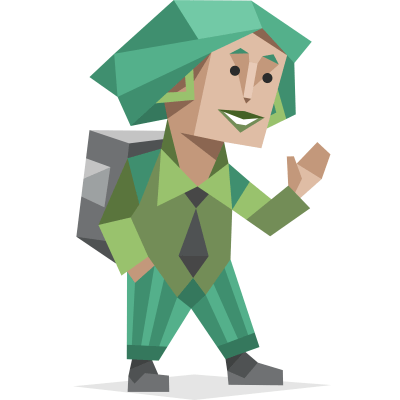
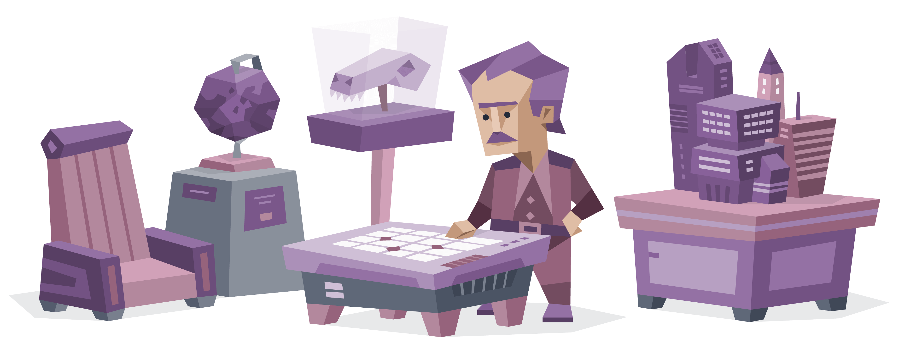
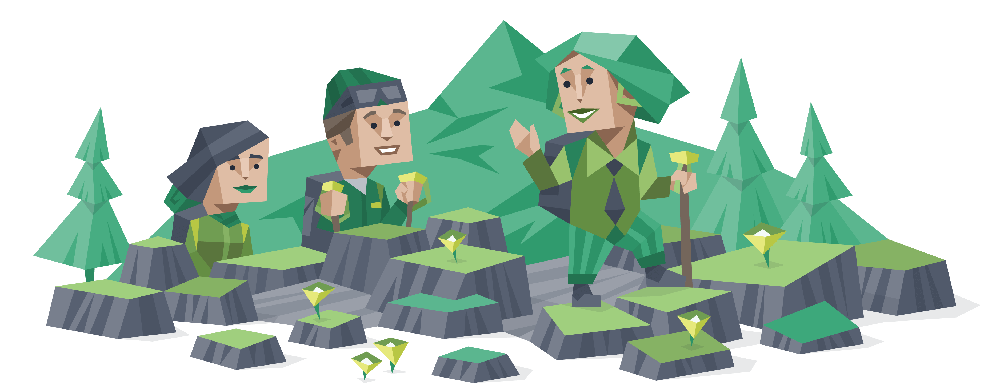
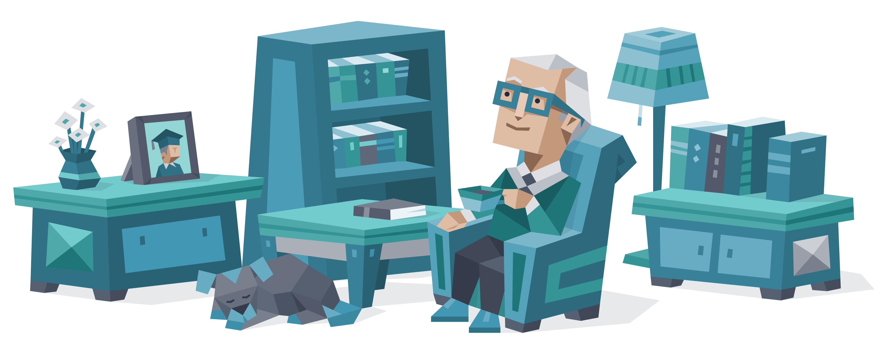
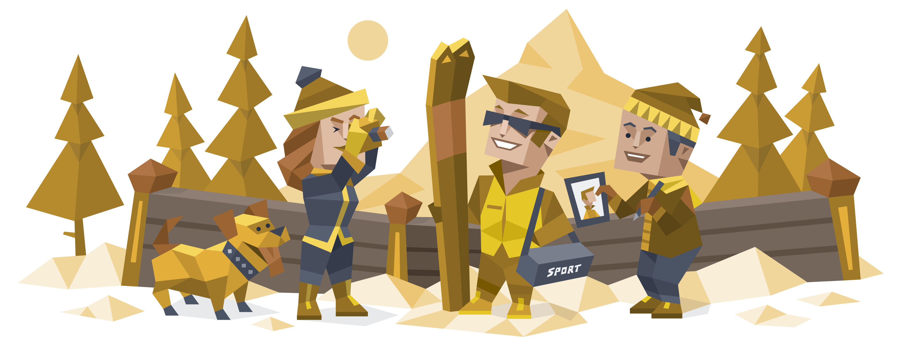

用 AI 用了这么久，有一件事我想聊聊。
它确实很好用。但好用归好用，用久了之后你会发现一个问题——它有点无聊。
不是说第一天。第一天你会觉得它像个神器，什么都能做。但等你真的开始每天跟它协作，每天对着它写代码、想方案、解决问题，沉进去之后，你会慢慢感觉到：和我待最久的，居然是一台冰冷的机器。
它不会生气，不会俏皮，不会因为你说了一句什么而有不同的反应。你跟它说"这个方案我觉得不对"，它说"您说得有道理，以下是修改建议"。你跟它开玩笑，它也礼貌地回应你。
我有一段时间一直在想这个问题：AI 跟真人最大的区别是什么？为什么跟它聊久了，会觉得有点冷冰冰的？
我觉得是因为没有性格。
但"性格"这个课题太复杂了。我去查了一些心理学的东西，发现这个领域争了几十年，根本没有一个清晰的定义。我想了很久，没有头绪。
直到有一天，朋友发消息问我：你是什么 MBTI？
我盯着那条消息看了三秒。
MBTI 争议挺大的，准不准另说。但它有一个独特的价值——它把性格压缩成了一套可描述、可传递的语言。这套语言，AI 能理解，而且理解得很好。我当时就去做了。

先试了一个单一人格——给它加了 INTJ，冷面架构师那种。它真的变了。以前我问它"你觉得这个方案怎么样"，它会给我列五条优点三条缺点，最后说"综合来看各有利弊"。加了 INTJ 之后，它直接说："方向错了，重新想。"
结果不一定更对，但我的思维被逼着往前走了。

然后试了 ENFP。我随口抛出一个模糊的想法，它顺着往外发散，三秒钟给我扯出五个方向，其中有两个我完全没想到。跟它聊完，我脑子里的东西比开始之前多了一倍。

再试 INFJ。我说"我感觉这个产品方向不太对，但说不清楚哪里有问题"。它没有问我细节，而是说："你说不清楚，是因为你心里其实已经有答案了，只是还没准备好承认它。"
我沉默了一下。它说对了。
之后我让几个朋友也试了试，大家反应都差不多——感觉像在跟一个真正有想法的人协作，而不是在用工具。
如果你不知道选哪个
不是所有人都了解 MBTI，也不知道哪种性格适合自己。所以我加了一个推荐功能。你输入自己的 MBTI，它会根据互补原则帮你匹配——不是找和你一样的，而是补你短板的。
你是 ENFP，创意满分但容易发散？→ 推荐技术大佬模式，帮你把天马行空收束成靠谱的方案。
你是 ISTJ，严谨可靠但有时过于保守？→ 推荐天才队友模式，用挑战式沟通拉你跳出舒适区。
不知道自己的 MBTI？没关系，告诉它你在做什么，它按任务类型推荐。
AI 的性格，可以自由搭配
用了一段时间之后，我发现另一个问题：单一的 MBTI 有时候不够用。
人是善变的。不同场景下我需要不同的状态。而且有些类型我只喜欢其中一部分：我喜欢 INTJ 的说话方式，直接、不废话；但思维方式我更想要 ENFP 那种，脑洞大、发散快。
人没办法这样切换，但 AI 可以。
所以我干脆把它拆开来——说话风格、思维方式、做事节奏，三个维度各自独立选。4 × 4 × 2，32 种组合，总有一个是你的。
四种调好的预设
考虑到不是所有人都想自己搭配，我直接做了四种现成的：

你说需求，它甩结论，不解释。适合赶 deadline、需要直接答案的时候。

烦死人，但它说对了。适合想法还模糊、需要挖出真正问题的时候。

让你感觉自己在变强，不是在被喂答案。适合学新东西的时候。

"别分析了先写！"赶 deadline 的时候我只找它。
怎么用
跟它说"切换人格"，它会弹出选项：
比如：ENFP（快乐小狗）、INFJ（绿老头）、ENFJ（宝剑哥）……
或者直接选一个预设：
1. 人狠话不多的技术大佬（INTJ × ISTP）
2. 脑洞大开的产品经理（ENFP × INFJ）
3. 带你飞的靠谱学长（ISTJ × ENFJ）
4. 你的天才队友（ESTP × ENTP）
不知道选哪个？输入「推荐」。想自己搭配？输入「自定义」。
同一个问题，换了人格是这样的——"我感觉这个方向不对，但说不清楚哪里有问题"：
把你现在的思路写出来，我看哪里断了。
你说不清楚，是因为你心里其实已经有答案了，只是还没准备好承认它。
没关系，说不清楚很正常。我们从头来，你先告诉我这件事你最开始是怎么想的……
别想了，先把你觉得"不对"的那个点列出来，一条一条写，写完再看。
安装方式
在命令行里直接跑，或者在 Claude Code / OpenClaw 对话里说"帮我安装 mbti-personality 这个 skill"，它会帮你执行：
安装完之后，说"切换人格"或者"设定 MBTI 人格"就行了。
用顺手了想保留？说"保存这个人格"，选保存到当前项目还是全局——全局的话每次打开自动带上。